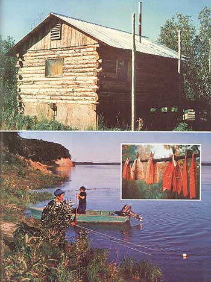

Homesteading in Alaska, the pamphlets will tell you, is finished. Gone. And it's true, in the sense that the government will no longer "give" you a tract of wilderness for an Alaskan homestead under the old Homestead Act. But the older, more traditional way of getting back to the land (i.e., subsistence farming on public domain acreage) is still very much alive and well here in the 49th state and I guess we ought to know. We know, because we're doing it.
Don't get me wrong, a homesteading in Alaska isn't an easy-or a particularly romantic-way of life. To make it up here the way we're making it, you have to work hard and forgo a good many "frills" (such as electricity and forced-air heating). But public domain subsistence homesteading is as viable in Alaska today as it was even before the Russians owned this land. In fact, it's probably easier now to make it here (thanks to some of the less obtrusive tools of technology) than ever before in history.
The typical subsistence setup is very basic. Ours centers around a compact one-room cabin made of squared-on-three-sides logs that we simply stacked and spiked together. Construction of the dwelling was uncomplicated and took minimal planning. Because of its low ceiling, our cabin requires comparatively little wood to heat it during severe winter weather. For light, we use a gas lantern.
Our inside furnishings can best be described as "simple". The cupboards, for instance, are neatly disguised as discarded gasoline boxes. Bunk beds are built right into the lodge's walls and our "closets" consist of nails driven into those same log walls. (Anything extra is stored in cardboard boxes under the beds or put outside in the cache.) The cabin's windows are plastic film attached loosely so that-in cold weather, when the "panes" shrink-the plastic won't crack. (For storm windows, we merely add another layer of the film.)
We pack our water in from nearby Kuskokwim River, which-so far, at least-is still pure enough to drink. (All told, there are probably less than 100 people living on the 100 miles of river above us.)
As you may or may not know, farming isn't western Alaska's strong suit. Cabbage does seem to thrive here, but the vegetable has rather limited recipe possibilities. Potatoes also do well in the Alaskan climate and have received most of our attention thus far. At that, our potatoes were only the size of walnuts and were few and far between our first year up here. The crop was more bountiful this past season however (even if the harvested spuds did later freeze on the floor of our cabin).
Wild berries are our main source of fruit and jam and agooduk (Eskimo ice cream). The hills around the Kuskokwim are bristling with blueberries, blackberries, redberries, and salmonberries (all of which can be stored right through the winter) . . . and further on down-river-on the flood plains-raspberries, rose hips, and cranberries thrive. (Your only competition for this bounty are the black bears.)
That ole river takes care of us in other ways too. The Kuskokwim is our only thoroughfare (there are no roads in our neck of the woods) . . . and we use it as our highway when we gather firewood, go berry picking or hunting, or just visit friends. But more than that, the stream provides our primary source of food since we're mainly fish farmers.
In the spring and summer we go after chee-fish (a sort of Alaskan tarpon, pronounced "she-fish"), red salmon, king salmon, silver salmon, and chum. During the fall we take grayling, eel, whitefish, and lush (a ling cod). All in all, we find we can fish from spring breakup until well after the river freezes over. Sometimes we locate an eddy and set a gill net . . , or put a "fish wheel" (a device that works like any other waterwheel, except that the paddles alternate with wire scoops which dip up the catch in swift water. Then again-on a long afternoon-we may just travel up one of the Kuskokwim's tributaries to hook grayling or rainbows or arctic char (as much for sport as for the food we catch).
When the ice comes, we occasionally go to elaborate measures to set fish traps or nets under the river's frozen surface. We'll run a net, for instance, by pushing it from one hole in the ice to another (then another) with a rope attached to a long, curved stick. (This is not an easy job, especially when it's twenty below outside and the ice on the river is two feet thick!) Setting a fish trap is a good bit more involved and not really worth the effort unless you've got a team of dogs to feed.
After the river freezes over and the water rises, the eels start running. To catch 'em, you go out at night and cut a trough (about three or four feet long "crosswise" on the river) out of the ice. Then you hang a lantern over the hole so you can see the eels swimming 'n' wiggling by, and-using a pole that has nails driven through one end-scoop the eels out, much as if you're "shovelin' snakes". Some folks just cook the critters whole, but I (remembering the feisty lamprey eels of my Michigan youth) prefer to pinch their heads off first.
I guess my favorite way of consuming fish is just to eat 'em dried (with-perhaps-some cheese) in any one of three forms: strips, flatfish, or blankets.
Strips are made by cutting fish (usually king salmon) into long, narrow pieces . . . dipping the slices in a sugar-salt brine and hanging 'em up to dry. "Flatfish" are prepared by skinning any of the smaller fish (such as red salmon or whitefish), opening each fish's body out flat, and drying them without brining them. Blankets-my favorite kind of cut-are made by [1] flaying a nice, big king salmon and laying him open like a blanket, [2] slashing the meat crosswise so it'll dry more completely, [3] soaking the carcass in brine, and [4] hanging it up to dry. (We dry all our fish by smoking 'em over a slow cottonwood or driftwood fire.)
Next to eating dried fish, I prefer my catch in the form of gwamaqqluk. That's when you take your strips, flats, or blankets off the rack when they're about half-dry and boil 'em. What you get is a nice, chewy, deliciously "smoky" tasting piece of fish. (If you're in a picnic mood, you also can take chunks of half-dry fish off the racks and roast 'em over the fire like hot dogs. A warning, though: If you have children, don't do this too often or your next winter's supply of protein may be perilously small come late fall!)
As I said before, life isn't always (or even primarily) idyllic up here . . . it's mainly a lot of hard work and making do with what you've got or doing without. There's many a winter day when you'll just come inside to eat at noon and to fall asleep at night. (When you've been out in the fresh, cold air all day and then enter a warm cabin, your eyes immediately get sticky and heavy.) And there'll be days when you'll work for hours on some small task and still not get it done and then have to work all night at it too.
In the north country, Nature has the upper hand and-as a result-good, honest efforts sometimes aren't enough to get you by. You'll lose your firewood in the overflow ice, or it'll rain all summer and your fish will rot. You'll need more than an average amount of patience. There are no guarantees . . . and it's foolish to look for any.
I guess that's the very reason why there's still a lot of opportunity for subsistence homesteading here in Alaska. You'll find a few old-timers up this way who like the freedom and solitude and self-reliance that characterize life in Alaska's back country . . . and you'll find a few (precious few) younger people, like myself, here too. Most native-born individuals, however-the young folks in particular-have learned (with help from the Bureau of Indian Affairs and the state-operated schools) to flee this country as quickly as possible for Anchorage or Seattle.
What it all boils down to is this: There's still plenty of room up here for the quiet person who isn't in a hurry to get anywhere but back to the land. The old-timers are looking for people to help them, people to teach and tell their stories to. Newcomers (hardworking newcomers) are always welcome.
Nope. It isn't easy to make it here . . . and it isn't a rich (in dollars) way of life even if you do make it. But it'll get you from here to there more pleasantly than working on the pipeline will.
|
 STEVE AND EVELYN CHAMBERLAIN An Alaskan homestead can offer independence, great fishing and beautiful rustic scenery. |
|
|